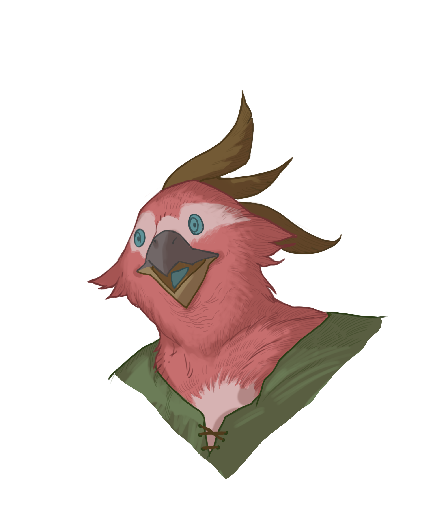
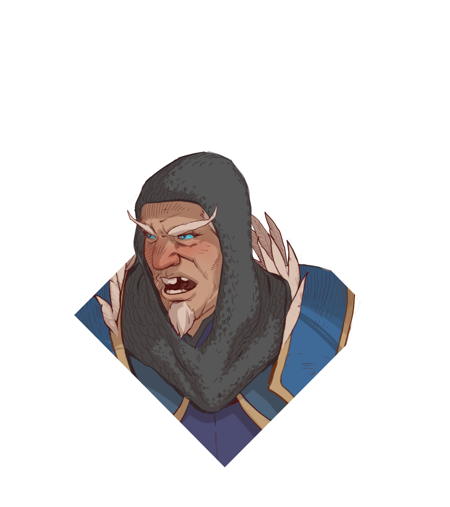

浅沟投叉兵


侧面低机位
薄雾冷晨光
浅绿蛙皮、锈红腰布
本张提示词
一名长腿窄腹的浅绿蛙族投叉兵，锈红腰布和一片旧皮护胸，蹼足。它扭身后引一把短木投叉，另一手向前平伸，站在浅沟边，叉头清楚有两齿。侧面低机位，主轮廓是前伸手与后引投叉，薄雾冷晨光，背景淡灰水草。
先看这批的轮廓和光影，再向下逐张对照参考。点图片看原尺寸，点缩略图跳到对应角色。
48 像素宽小卡预览
侧面低机位
薄雾冷晨光
浅绿蛙皮、锈红腰布
一名长腿窄腹的浅绿蛙族投叉兵，锈红腰布和一片旧皮护胸，蹼足。它扭身后引一把短木投叉，另一手向前平伸，站在浅沟边，叉头清楚有两齿。侧面低机位，主轮廓是前伸手与后引投叉，薄雾冷晨光，背景淡灰水草。
斜后方俯视
阴天下的亮米灰反光
暗绿蛙皮、草黄苇盾
一个矮圆的暗绿蛙族背夫，背着一面比自己宽的大圆苇盾，用粗绳系在胸前。它一手扶背绳，一手拄短木棍，蹼足踏上泥岸。斜后方俯视，半张侧脸从盾边探出，宽盾和蹼足形成低圆轮廓，阴天明亮米灰反光。

远一点的正侧面
晴日水面偏青反光
灰白鱼鳞、靛青绑布
一名高瘦灰白鱼族探水工，扁嘴、长鳃鳍、蹼足，靛青绑布。双手握一根分成黑白两段的测深木竿，斜插进船旁浅水，腰后挂一小盘麻绳。正侧面完整站姿，竿与长腿拉出窄直剪影，晴日水面偏青反光，远岸很简略。

高位三分之四俯视
午后白墙反射的柔光
褐灰羽、淡蓝短褂、红瓦
一名长而细黑喙的褐灰鸟族补瓦匠，头顶平滑，淡蓝短褂、粗布绑腿，趾爪抓住瓦脊。它蹲在屋顶，一手提起一块宽红瓦，另一手按住下方木条，脚旁一小桶黏土。高位俯视，红瓦和抬臂是主体图形，午后白墙反射柔光。

贴地平视
林间绿荫漫射光
乳白短羽、橄榄绿背心、赭土
一个矮壮乳白羽鸟族挖根人，圆头、短扁黑喙，橄榄绿背心，背一只扁藤筐。它两足外撑、蹲得很低，用一把短钩刀从泥中挑起一块长根，另一手捏根须。贴地平视，圆体与长根的弯线清楚，林间绿荫漫射光，赭色土面。

正面略俯视的全身坐姿
雨天冷光与布棚下暖墙反光
灰衣、暗红围裙、深褐皮靴
一名普通人类年长女补靴匠，短灰发、宽脸、灰衣和暗红皮围裙。她坐矮凳，左手把一只很大的旧靴套在膝头，右手拉出一条弯曲的粗鞋线，脚边只有木楦与一把锥子。正面略俯视全身坐姿，靴底是中心大形，雨天冷光混少量暖墙反光。
完整侧面平视
晴天斜逆光与长影
靛褐衣、浅木锯架
一名瘦高的人类关隘拉锯工，乱短发，靛褐粗衣，布绑腿。它前后弓步，双手扶着一具高长方木框锯往下推，木框环住一根架高的短圆木。完整侧面平视，长方框锯与弯背形成清楚空隙，晴天斜逆光，地面长影，木屑只画几笔。
由墙下仰视
清亮晨光与凉绿墙影
暗蓝小羽、麻白衣、草绿网
一个体型很小的普通暗蓝羽鸟族少年，细长淡色喙、麻白短衣和大趾爪，站在半高苔墙上。它踮起一足，双手举一个大圆草编虫网，网口朝向墙上方一只很小的飞虫。由墙下仰视，全身与圆网完整，晨光清亮，墙背面是凉绿暗影。

近正面全身，手托宽浅盘
棚布下紫蓝环境光，单侧橘光
深紫虫甲、米黄披布、橙色香料
一名普通矮胖虫族香料贩，两臂两腿，深紫头甲、小金复眼、短平触角，米黄披布。左手托一只横宽浅木盘，盘里三堆颜色不同的香料，右手捏一撮橙粉凑到口器前闻。近正面全身，宽盘撑开轮廓，棚下紫蓝环境光，左侧摊灯橘光，远处只留几个暗棚块。
水面高度的侧前视
浓云间一束冷亮天光
墨绿鱼鳞、浅褐短衣、灰泥
一个墨绿鱼族石渠清沟工，圆头、短鳍、结实蹼足，浅褐短衣。双手用一把短柄三齿耙从泥渠中抬起一团枯苇，身体后仰借力，一脚在渠内、一脚踩石沿。水面高度侧前视，耙与枯苇拉出向上的大斜线，浓云间冷亮天光，湿泥灰沉。

正面低机位
秋日阴天，叶片柔暖透光
暗木根、赭红大叶、灰绿苔
一只低阶小树灵，暗木根双足和细枝双手，短圆木脸上两条小眼缝。身体披着几片宽大的赭红落叶，像低矮圆锥雨披，一手掀叶边、一手抱着几枚橡果。正面低机位全身，根足与宽叶边轮廓清楚，秋日阴天，叶片边缘柔暖透光，地面灰绿苔。

贴地纯侧面
海边晚霞，湿石反射粉白光
灰蓝壳、浅沙大螯
一只低阶原创砾滩蟹，扁宽灰蓝壳，六条粗短行走腿，前方一大一小两只钳螯，两个短眼柄。大螯正顶开一块浅色卵石，小螯按住石边，身体很低。贴地侧面完整全身，一大钳与扁壳的比例是特征，海边晚霞，湿石反射粉白光，背景简化暗海线。

微距略俯视
谷仓门缝斜光，大片柔暗
浅赭绒毛、灰耳、谷黄
一只低阶原创苇尾小啮齿兽，浅赭绒毛、扁圆灰耳、钝鼻、短足，尾端是一小撮像苇穗的扁毛。它蹲在破布袋旁，两只前掌抱着一粒大谷穗，脸颊鼓起，尾巴绕向左前方。微距略俯视完整全身，谷仓门缝斜光只照头和谷粒，其余为柔暗大块。

正侧面低机位
阴天港口冷光，黄铜局部亮边
旧铜绿、陶红油罐、米灰
一具低矮的双足运油机械偶，方圆铜壳小头、两枚乳白玻璃眼、粗短铰接双臂与平足。它抱着一只占身高一半的陶红大油罐，罐口用软木塞封紧，一根短软管盘在肩侧，身体微微后仰平衡重量。正侧面低机位全身，油罐大圆形是主特征，阴天港口冷光，黄铜只在磨边发亮。

完整侧后方，前倾推进
低斜夕阳，轮辐与翼尖透光
烟白小翼、土蓝短衣、深木车
一名普通男性人面翼裔推车工，棕肤、短黑发，烟白小翼向两侧低开，土蓝短衣。它俯身双手握单轮小木车的把手，车里两袋谷物，一脚后蹬、一脚上坡。完整侧后方构图，车轮、斜身与小翼都完整，低斜夕阳照亮轮辐和翼尖，路面温褐，坡后暗蓝。

近正面微仰视
灰亮海雾与一点冷银光
铁灰羽、褪蓝短甲、骨白弯号
一名普通瘦高铁灰羽鸟族号角兵，窄长喙、平短额羽，褪蓝轻甲和麻绑腿。双手把一只大弯骨号举到喙前，号口在胸侧向外翻开，双足分开站在盐白岩台。近正面微仰视全身，号角的圆弧与瘦身形成区别，灰亮海雾，湿甲边一点冷银光。
高位侧俯视
烈日浅水反光，桶内深影
灰绿蛙皮、棕木桶、蓝白水
一名普通灰绿蛙族洗桶人，圆腹、短手和大蹼足，只穿浅褐围腰。它跨坐一只横放的大木桶，左手扶桶沿，右手用一束芦草伸入桶内刷洗，桶口朝左前方，脚边一小片泡沫。高位侧俯视完整全身，大桶口形成暗圆，烈日浅水反光亮白，腹下与桶里保持深影。
中远景三分之四侧面
风沙阴天，土黄漫射光
锈褐铜壳、灰麻绑带、暗木桩
一具普通锈褐色矮机械搬桩偶，低平梯形头、短圆耳、方脚，两手把一根粗木栅桩横扛肩头，另一根短桩绑在背上。腰间灰麻绑带，身体弯腰向右行进。中远景三分之四侧面全身，长桩与小身体形成宽大不对称轮廓，风沙阴天土黄漫射光，地上软影。
侧背平视，弯腰拾取
雨后云缝暖光，地面冷灰
褐白杂羽、灰绿短袍、旧铁
一名普通褐白杂羽鸟族拾矛人，长窄黑喙、无盔短额羽，灰绿粗布短袍，背着一小捆折断的旧木矛。它一腿弯曲、一腿后伸，俯身用右手从草地拾起另一截钝矛，左手扶背捆。侧背平视全身，背后几根参差木杆形成扇形，雨后云缝暖光，地面冷灰。
低机位侧前视
林荫漫射光，浅色背毛清亮
米褐短毛、暗绿苔角、灰蓝泥
一只低阶原创苔角幼兽，粗短四足，圆厚米褐短毛身体、宽平深鼻、很小的圆耳，头顶两枚钝短木质角，角上有一点暗绿苔，短尾像一片扁叶。它把鼻子伸向一片湿叶，一只前蹄抬起，侧身站在浅泥旁。低机位侧前视完整全身，圆体、短角和细小抬蹄清楚，林荫漫射光照亮浅背毛，泥面灰蓝。